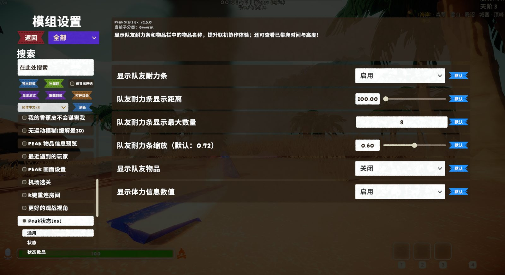
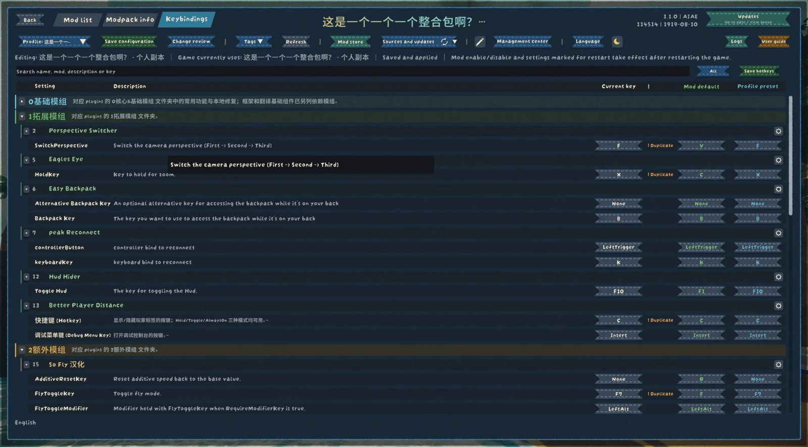
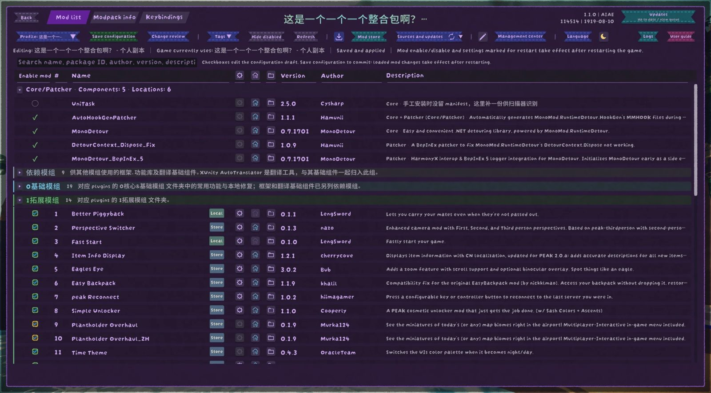

模组配置
所有模组的设置，集中在一棵树里
在 ModConfig 设置页的基础上加了树形侧栏、说明面板和快捷键页。改动先放进草稿，核对清楚再保存。

快捷键页

主要功能
- 树形侧栏模组和它的分区排成一棵树，跟概览用同一套分组。可以搜索，常用的模组可以置顶。
- 说明面板选中或悬停一个设置项，上方显示它的说明、默认值和可选范围。
- 小数正常显示模组参数里的小数照常显示和输入，不会被取整。
- 保存和默认并排每个设置项右边是保存和恢复默认两个按钮。
- 快捷键页所有模组的快捷键放在同一页，每个键三列：当前按键、模组默认、方案目标。点一下直接录新按键。
- 重复键提示两个模组用了同一个键会标出来，可以跳到对方那一项，也可以在本机忽略这对冲突。
- 先改草稿参数、快捷键、启停改了都先进草稿，名称旁出现橙色角标。游戏崩溃了草稿也还在。
- 变更检查目录保存前按模组列出原值、新值和什么时候生效：立即、下一局、重启游戏。
- 离线修改模组这次没加载，它已有的配置文件也能改，启用后使用。
- 和别的工具合并手动改了 cfg 文件，没冲突的字段自动合并；同一个字段两边都改了，让你选保留哪个。
两套配色

全部界面有蓝色和紫色两套配色。蓝色跟着游戏 3.1 的设置菜单，紫色是夜间风格。点概览工具条或设置页「搜索」旁的月亮图标切换，也可以选「夜里自动紫色」：装了 TimeTheme 时，游戏里天黑就自动变紫。
按钮按功能分颜色：绿色提交，红色危险操作，蓝色编辑和选择，青绿打开别的窗口，灰色普通操作，使用说明单独一种颜色。